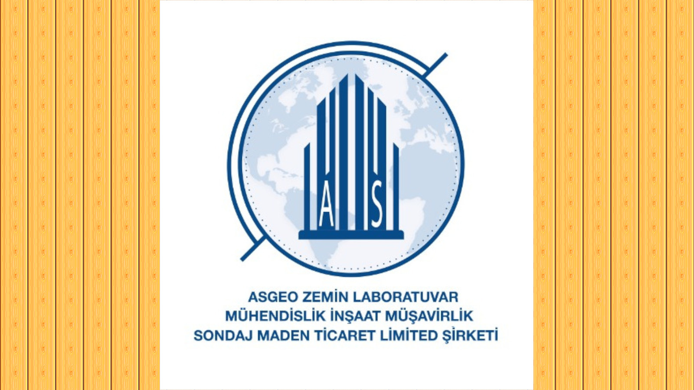

21.02.2021
Asgeo Zemin tecrübesinin 20. yılına girdi
As Geo Zemin Marmara Bölgesi'nde gerçekleştirdiği sayısız Zemin Etüdü çalışmalarıyla geçirdiği 19. yılını tamamlayarak 20 yaşına girdi. Bize sundukları destek ve gösterdikleri güvenden ötürü tüm müşterilerimize ve çözüm ortaklarımıza, paydaşlarımıza şükranlarımızı arz ediyoruz.